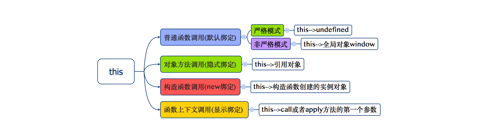

javaScript系列 [06]-javaScript和this
在javaScript系列 [01]-javaScript函数基础这篇文章中我已经简单介绍了JavaScript语言在函数使用中this的指向问题，虽然篇幅不长，但其实最重要的部分已经讲清楚了，这篇文章我们来单独谈一谈神秘的this，或者叫
怎么也搞不清楚的指天指地指空气的this。
1.1 this简单说明
this关键字被认为是JavaScript语言中最复杂的机制之一，跟this相关的知识很多开发者往往总是一知半解，更有甚者很多人完全搞不懂也不愿意去搞懂跟this相关的内容，在必须要用到的时候宁愿选择在代码中总是使用临时打印验证的方式来探知this的指向。这是现实，也许因为他们觉得跟this有关的这一切都混乱不堪，各种文档晦涩难懂，this的指向好似没有固定的套路，总是变来变去难以捉摸。其实，this原本并没有那么复杂，它就是个被自动定义在函数作用域中的变量，总是指向某个特定的“对象”。接下来，我们将尝试用这样一篇文章来讲清楚跟this有关的以下问题：
❐ this 是什么？
❐ 为什么要使用this?
❐ this指向谁？
❐ this绑定的几种情况
❐ this固定规则外的注意事项
this是什么?
在声明函数的时候，除了声明时定义的形式参数外，每个函数还接受两个附加的参数：this和arguments。其中arguments是一个类似于数组的结构，保存了函数调用时传递的所有实际参数，arguments这个参数让我们有能力编写能够接受任意个数参数的函数。参数this在面向对象编程中非常重要，它总是指向一个“特定的对象”，至于这个特定的对象是谁通常取决于函数的调用模式。
1 | <script> |
现在我们知道和this有关的关键信息是：
① this是JavaScript中所有函数的隐藏参数之一，因此每个函数中都能访问this。
② 函数中的this总是指向一个特定对象，该对象具体取决于函数的调用模式。
为什么要使用this?
this提供一种更优雅的方式来隐士的传递一个对象引用，因为拥有this，所以我们可以把API设计得更加的简洁并且易于复用。简单点说，那就是this可以帮助我们省略参数。
我们可以通过以下两个代码片段来加深对this使用的理解。
1 | /**代码 [ 01 ]**/ |
代码说明：上面的代码声明了两个函数：speak和getContentText，这两个函数都需要访问对象中的属性，上面的代码中每个函数都接收一个obj对象作为参数。
1 | /**代码 [ 02 ]**/ |
代码说明：完成相同的功能，还是两个同样的函数，区别在于我们借助this省略掉了函数必须要传递的对象参数，实现更优雅。而且如果你的代码越来越复杂，那么需要显式传递的上下文对象会让代码变得越来越混乱而难以维护，使用this则不会如此。
1.2 函数和this
this指向谁绑定给哪个对象并不是在编写代码的时候决定的，而是在运行时进行绑定的，它的上下文取决于函数调用时的各种条件 。this的绑定和函数声明的位置没有任何关系，只取决于函数的调用方式。
当函数被调用时，会创建一个执行上下文。该上下文会包含一些特殊的信息，例如函数在哪里被调用，函数的调用方式，函数的参数等，this其实是该上下文中的一个属性，它指向谁完全取决于函数的调用方式。
现在我们已经弄明白了this最核心的知识：this的指向取决于函数的调用方式。
函数基础
在接着讲解之前，有必要对函数的情况进行简单说明，比如函数的创建、参数的传递、函数的调用以及返回值等等。
函数的创建
在开发中我们有多种方式来创建（声明）函数，可以使用function关键字直接声明一个具名函数或者是匿名函数，也可以使用Function构造函数来创建一个函数实例对象。
1 | //01 function关键字声明函数 |
函数的参数
函数的参数有两种，一种是形式参数，一种是实际参数。
形式参数
在函数声明（创建）的时候，我们可以通过一定的方式来指定函数的参数，相当于在函数体内声明了对应的临时局部变量。
实际参数
在函数调用的时候，会把实际参数的值传递给形式参数，存在一个隐藏的赋值操作，实际参数就是函数调用时()中的参数。
隐藏参数
JavaScript中所有函数中均可以使用this和arguments这两个附加的隐藏参数。
1 | //[1] 函数的声明 |
函数调用
函数名后面跟上调用运算符[()]的代码，我们称为函数调用，当函数被调用的时候，会把实参赋值给形参并自上而下的执行函数体中的代码。
函数调用和this绑定
因为this的绑定完全取决于函数的调用方式，所以要搞清楚this绑定问题只需要搞清楚函数调用方式即可，函数的调用方式通常来说有以下四种：
❐ 普通函数调用(默认绑定)
❐ 对象方法调用(隐式绑定)
❐ 构造函数调用(new绑定)
❐ 函数上下文调用(显式绑定)
函数的调用方式只有上面的四种情况，而要确定其具体的调用方式，需要先确定函数调用的位置。
函数调用位置
函数调用位置也就是函数在代码中被调用的位置[函数名+()的形式]，我们可以通过下面的示例代码来理解函数的调用位置。
1 | function f1() { |
1.3 this绑定浅析
① 普通函数调用(默认绑定)
普通函数调用就是函数名后面直接更上调用运算符调用，这种情况下函数调用时应用了this的默认绑定，如果是在非严格模式下，该this指向全局对象window，如果是在严格模式下，不能将全局对象用于默认绑定，该this会绑定到undefined。
1 | //声明全局变量 t |
② 对象方法调用(隐式绑定)
对象方法调用又称为隐式绑定，当函数引用有上下文对象的时候，隐式绑定规则会把函数调用中的this绑定到这个上下文对象。需要注意的是，如果存在引用链，那么只有对象属性引用链中的最后一层在调用位置中起作用，下面我们通过一个代码片段来理解这种调用方式。
1 | var name = "wenidngding"; |
上下文对象
上下文对象可以简单理解为函数调用时该函数的拥有者，或者引用当前函数的对象。
this丢失的问题
我们在确定this绑定问题的时候不能一根筋的把该函数是否是对象的方法作为判断的准则，而要抓住问题的本质，而且代码中可能存在this隐式绑定丢失的问题。外在的所有形式其实都不重要，最根本的就是看函数调用的时候，用的是什么方式？
1 | //字面量方式创建对象，该对象拥有name属性和showName方法 |
➤ 思考：能否缩短对DOM操作相关的方法？
1 | console.log(document.getElementById("demoID")); //正确 |
代码说明 有的朋友可能尝试过像上面这样来写代码，发现通过这样简单的处理想要缩短DOM操作相关方法的方式是不可取的，为什么会报错？原因在于document.getElementById方法内部的实现依赖于this，而上面的代码偷换了函数的调用方式，函数的调用方式由对象方法调用转变成了普通函数调用，this绑定的对象由document变成了window。
怎么解决呢，可以尝试使用显式的绑定指定函数内的this，参考代码如下:
1 | var getById = function () { |
③ 构造函数调用(new绑定) 构造函数方式调用其实就是在调用函数的时候使用new关键字，这种调用方式主要用于创建指定构造函数对应的实例对象。
构造函数
构造函数就是普通的函数，本身和普通的函数没有任何区别，其实构造函数应该被称为以构造方式调用的函数，这样也许会更准确一些。因为在调用的时候总是以new关键字开头[例如：new Person() ]，所以我们把像Person这样的函数叫做构造函数。虽然构造函数和普通函数无异，但因为它们调用的直接目的完全不同，为了人为的区分它们，开发者总是约定构造函数的首字母大写。
当函数被以普通方式调用的时候，会完成实参向形参的赋值操作，继而自上而下的执行函数体中的代码，当构造函数被调用的时候，目的在于获得对应的实例对象。
1 | //声明一个Person函数 |
构造函数内部细节
使用new以构造函数的方式来调用Person的时候，内部主要做以下操作
① 创建空的Object类型的实例对象，假设为对象o
② 让函数内部的this指向新创建的实例对象o
③ 设置实例对象o的原型对象指向构造函数默认关联的原型对象
④ 在函数内通过this来添加属性和方法
⑤ 在最后默认把新创建的实例对象返回
总结 如果以构造函数方式调用，函数内部的this绑定给新创建出来的实例对象。
④ 函数上下文调用(显式绑定)
在开发中我们可以通过call()或者是apply()方法来显式的给函数绑定指定的this，使用call或者是apply方法这种调用方式我们称为是函数上下文调用。
JavaScript语言中提供的绝大多数函数以及我们自己创建的所有函数都可以使用call和apply方法，这两个方法的作用几乎完全相同，只有传参的方式有细微的差别。
call方法和apply方法的使用
作用：借用对象的方法并显式绑定函数内的this。
语法：对象.方法.call(绑定的对象，参数1，参数2...) | 对象.方法.apply(绑定的对象，[参数1，参数2...])
使用代码示例
1 | var obj1 = { |
总结 如果以函数上下文的方式来调用，函数内部的this绑定call或者是apply方法的第一个参数，如果该参数不是对象类型那么会自动转换为对应的对象形式。
1.4 this的注意事项
我们已经介绍了一般情况下this绑定的问题，虽然上面的规则可以适用绝大多数的代码场景，但也并非总是百分百如此，也有例外。
例外的情况 ①
在使用call或者apply方法的时候，非严格模式下如果我们传递的参数是null或者是undefined，那么这些值在调用的时候其实会被忽略，this默认绑定的其实是全局对象。
1 | /**[代码 01]**/ |
严格模式下，传递null或者是undefined作为call和apply方法的第一个参数，this的绑定和上下文调用保持一致。
1 | /**[代码 02]**/ |
建议 以前我们在以函数上下文方式来调用函数的时候，如果并不关心函数内部的this绑定，那么一般会传递null值或者undefined值。如果这样的话，在非严格模式下，函数内部的this默认绑定给全局对象并不安全，建议传递空对象[可以使用Object.create(null)方式创建]，这样函数操作会更安全而且代码可读性会更好。
例外的情况 ②
ES6中推出了一种特殊的函数类型：箭头函数。箭头函数使用=>操作符来定义，需要注意的是箭头函数内部的this绑定并不适用于既定的四种规则，this的绑定由外层作用域来决定。
1 | //声明函数 |
例外的情况 ③
需要特别注意的是：在代码中我们可能会创建函数的“间接引用”，这种情况下调用函数会使用默认绑定规则。
1 | var objA = { |
代码说明 我们重点看最后一行代码，赋值表达式objB.showName = objA.showName的返回值是目标函数的引用，这种间接引用调用方式符合普通函数调用的规则，this会被绑定给全局对象。最后一行代码，拆开来写的形式：
1 | var f = objB.showName = objA.showName; |
1.5 this绑定总结
当函数的调用位置确定后，我们可以顺序应用下面的四条规则来判断this的绑定对象
① 是否由new调用？ 如果是，则绑定到构造函数新创建的实例对象身上。
② 是否由call或者apply调用？如果是，则绑定到第一个参数指定的对象身上。
③ 是有作为对象的方法调用？如果是，则绑定到这个引用的对象身上。
④ 默认普通函数调用，如果是严格模式则绑定到undefined，否则绑定到全局对象。